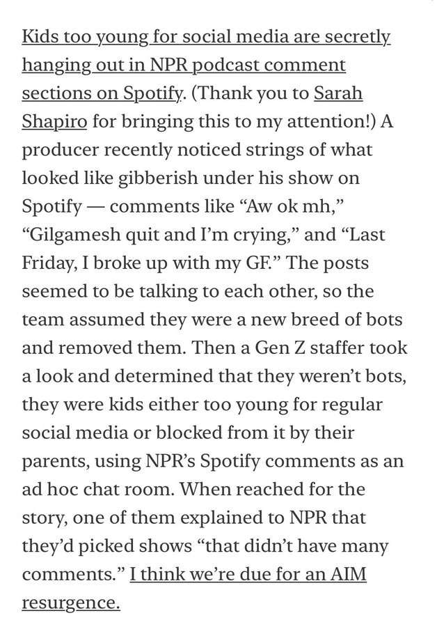
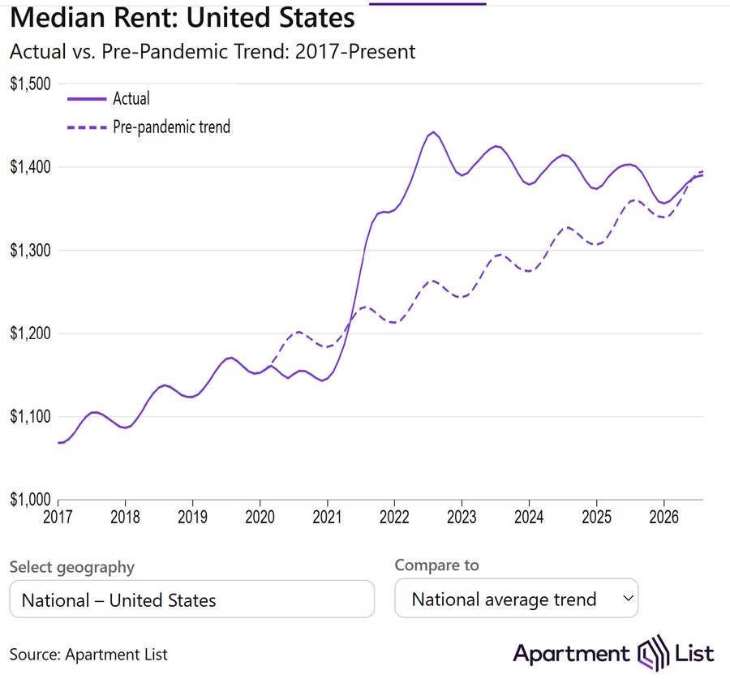
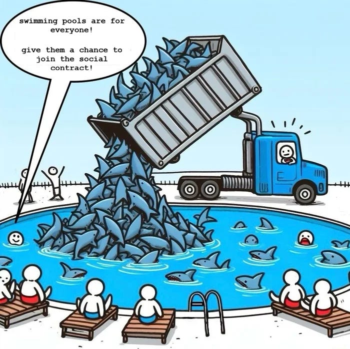

WEEKLY REMINDERS/ANNOUNCEMENTS – EWOT, Week 6
Readings and Topics this Week: We will be moving toward the end of our exploration of our Economic Evolution – examining how closely the improvements in our ability to produce goods and services may correlate with changes in other aspects of our lives we value. We will then be moving on to the primary question of “how did all of this happen” and “can we continue to do it?” along with pondering some of the undesirable consequences of our growth experience.
You can continue reading through BOTH Sections B and C of the reading list at your leisure.
Recitation:. We are aiming to have a discussion of the exam prompts in several of the sessions, but check Katherine’s weekly update and a note from your TA for more details.
Weekly AssignmentS: Remember this week all you need to do for the week 5 research is PLAY THE ARCADE games! Many of them are excellent given the constraints put on you. For the Rumination, an exploration of how “big” the “world” really is.
Looking ahead to the Fall Break weekend. We have decided YOU DO NOT HAVE ANYTHING DUE ON OCTOBER 11. Enjoy the break. If you want to get a head start, we have already posted the subsequent week’s work.
Exam: I hope you had as much “fun” taking the exam as I had writing it! We will not be posting solutions to the exam. Your TAs will be available to discuss the suggested solutions during office hours and again during recitation. We aim to have the exam grading turned around within a week -- please look for Katherine’s updates for most up-to-date information.
Before you ask about the exam, please read the syllabus regarding grading and exam policies.
My Availability
I will not be available electronically until Monday morning.
Call Alexa or Katherine if there is a serious issue, and they will route
communication to me. Feel free during the week to call or text.
Check out Rochester events, office hour times and locations, department information, and up to date news and job opportunities (as they come to me) visit us at tiny.cc/RizzoHours. I update my calendar weekly on that page, and include other sometimes useful information on it for you.
This Week at Rochester
STAFF PICKS
Thursday–Sunday · Campus-wide
October 1–4. Headliners include Amna Nawaz, Andrew Ross Sorkin, and Nick Offerman, with performances, open houses, and family activities. Use the live schedule for individual times, admission, and availability.
Friday · Music
8 PM · Kodak Hall. Electronica played by an acoustic ensemble. TICKETED.
Saturday · Sports
Volleyball at noon and 4; football at 1; men’s soccer at 5; women’s soccer at 7:30. Full opponents and venues below.
Monday · Theater / Talk
Rachel Chavkin on making theater
5–6 PM · Zoom. The Hadestown director joins Nigel Maister. RSVP REQUIRED.
Wednesday · Talk
AI Coffee Salon: What should we trust?
1–2 PM · Welles-Brown Room, Rush Rhees. An informal discussion of information and credibility. FREE.
Thursday, October 8 · Economics
Pablo Peña: Human Capital for Humans
3:30 PM · Morey 321. An accessible introduction to the economic science of people.
Thursday, October 8 · Theater
8 PM · Smith Theatre, Sloan Performing Arts Center. Greek myth, freedom, desire, and a post-show reception. TICKETED.
Check out our full schedule here: https://rochesterrizzo.github.io/Rizzo-Hours/this-week-at-rochester/
Upcoming Special Events
The Politics and Markets Project, Moderated Panel Discussion Hosted by Professor David Primo
Title: AI and privacy (both thinking about government regulation and things like surveillance pricing, or, getting good deals!)
Date: Wednesday, November 4th
Time: 7:30pm to 8:30pm
Location: Wegmans Hall, 1400.
More Info on the PMP: Follow on Instagram
Department of Economics Special Guest Lecture
Title: Human Capital for Humans, with moderation by U of R Economics Undergraduate Isaac Miller
Who: Pablo Pena of the University of Chicago
Date: Thursday, October 8th
Time: 3:30pm
Location: Morey 321
More Info: Why do people marry, have kids, invest in health, or choose a career? Economics has an answer, and it's not "supply and demand," it's human capital theory, the framework Nobel laureate Gary Becker built and spent his career applying to every domain of human life. Pablo Peña studied under Becker at Chicago, taught his famous course after him, and has now written the accessible version of that legendary class: Human Capital for Humans.
Join us for a talk and conversation with Professor Peña about the book — how economists think about parenting, aging, marriage, and the everyday decisions that shape who we become. Expect a short talk, a moderated discussion, and open Q&A. Copies of the book will be available for purchase (and signing) at the event.
About Professor Pena: Pablo Peña first encountered human capital theory twenty years ago as an undergraduate captivated by a course taught by Nobel laureate Gary Becker at the University of Chicago — an experience he's described as immediately clarifying. That encounter led him to TA the course, and eventually to teach it himself. Peña is now an Associate Instructional Professor in Economics and the College at the University of Chicago, specializing in applied price theory, human capital theory, and empirical economics, and his research uses experimental and quasi-experimental methods and large datasets to test economic theories with actionable applications for business, nonprofits, and government. Outside academia, he co-founded Microanalitica, previously served as Director of Private Sector Partnerships at the Development Innovation Lab, and headed Economic Studies at Mexico's National Banking and Securities Commission. He earned his Ph.D. in Economics from the University of Chicago.
His book, Human Capital for Humans: An Accessible Introduction to the Economic Science of People (University of Chicago Press, 2025), has been nominated as a finalist for the Manhattan Institute's 2026 Hayek Book Prize, and has drawn praise from economists including Steven Levitt, Tyler Cowen, and Nobel laureate Michael Kremer.
Department of Economics PIZZA and PAYOFFS Special Event

Title: Pizza and Payoffs: Everything you wanted to know about the Econ major — courses, careers, and what you can actually do with an economics degree.
Who: Professor Lisa Kahn and special guest Chris Nosko
Date: Monday, November 9
Time: 5:30pm to 7:00pm
Location: TBD
More Info: Chris Nosko is the head economist for Amazon! Very short department information session and lots of time for Q&A and discussions with Nosko and our department faculty.
Department of Economics Annual GILBERT LECTURE (walk around Harkness to see a little bit of its history)*
Title: TBD
Who: Robert Staiger, Chief Economist of the World Trade Organization
Date: mid-November
Time: TBD
Location: TBD
More Info: Learn more about Professor Staiger here.
THE GILBERT LECTURE
The Donald W. Gilbert Memorial Lecture is one of the great traditions of the University of Rochester Department of Economics.
Donald W. Gilbert was deeply tied to both the University and the city of Rochester. A Rochester native and East High graduate, he entered the University in 1917, graduated in 1921, earned a master’s degree in economics at Rochester, studied at Harvard, and then spent nearly his entire professional life at UR. He rose from instructor to professor and chair of Economics, became dean of graduate studies, and in 1948 became the University of Rochester’s first provost. During his leadership of graduate education, Rochester was admitted in 1941 to the Association of American Universities, then a very small group of the leading research universities in the United States and Canada.
Gilbert also believed strongly that economics should reach beyond the classroom and seminar room. He helped create the University of Rochester Management Clinics, which connected the University with dozens of Rochester businesses and industrial organizations, and he was heavily involved in civic and public-policy life. When he died in 1957, at only 57, President Cornelis de Kiewiet described him as one of the University’s most important links to the Rochester community.
After Gilbert’s death, his friends, colleagues, alumni, and former students established a memorial lecture in his honor. The goal was entirely consistent with Gilbert’s career: bring serious economics to bear on the difficult practical and policy problems of the day.
The first Gilbert Lecture was delivered on April 30, 1959, by the great public-finance economist Richard Musgrave, speaking on the federal budget and the American economy. What followed was an extraordinary run of speakers. In the first decade alone, the series included Paul Samuelson, Milton Friedman, Kenneth Boulding, Wassily Leontief, Robert Solow, and James Tobin.
Over the following decades, Gilbert lecturers have included many of the most important economists of the modern era: Kenneth Arrow, Arthur Lewis, George Stigler, Franco Modigliani, Gary Becker, Robert Fogel, Thomas Schelling, James Heckman, Vernon Smith, Peter Diamond, Richard Thaler, Michael Kremer, Paul Romer, and many others.
Remarkably, 18 Gilbert lecturers later received the Nobel Prize in Economics.
Just as important as the names are the subjects they came to Rochester to discuss: unemployment, inflation, economic growth, population, pollution, regulation, Social Security, technological change, development, financial crises, education, health care, inequality, international trade, and the institutions that shape economic life.
The Gilbert Lecture is not simply a celebration of famous economists. It promotes the particular idea about that Rochester economics takes the tools of the discipline and aims them at the world outside the classroom.
One final Rochester detail: Gilbert Hall is named for the same Donald W. Gilbert, another reminder of how significant he was to the development of the University.
Supply and Demand Mechanics Lab
Look for an announcement from our TA staff
Some Items that Caught Our Attention
Average is Average: “According to a widespread belief, the average IQ of university students is 115 to 130 IQ points, that is, substantially higher than the average IQ of the general population (M = 100, SD = 15). We traced the origin of this belief to obsolete intelligence data collected in 1940s and 1950s when university education was the privilege of a few. Examination of more recent IQ data indicate that IQ of university students and university graduates dropped to the average of the general population. The decline in students’ IQ is a necessary consequence of increasing educational attainment over the last 80 years. Today, graduating from university is more common than completing high school in the 1940s.” Yet you can win Nobel Prizes by proclaiming that more people need to go to college.
Not Average, Not Meliocre: What Does This Tell You About Climate Risk/Resilience? What does this tell you about Schelling and coordination traps? “Ken Griffin Is Making the Largest Donation to Higher Education in U.S. History. Citadel CEO’s gift will launch a Carnegie Mellon University campus in Miami.” It is not just a shot across the bow to climate doomers, it may well be a shot acrss the bow to poorly regulated, over-taxed entities too. Talent can move. Rome once fell.
Unintended Consequences Episode 3299588599: In perhaps the most predictable fashion ever (it's like thinking that young kids won't find a way to sneak off and smooch at boarding school even with "no visiting the dorms" rules after 8pm).

College, Exams, Learning in an Age of AI: the geniouses at MIT seem to agree with us! “the process of education is necessarily a productive struggle, and that the most important product of their education is not a GPA or a diploma but themselves: their personal growth and intellectual maturity and the development of their own imagination, insight, and judgment.
Instilling these attitudes needs to become a central task for every educator, so that our students know not only what they should learn, but also how they should learn and why learning matters. We need to help them develop metacognitive abilities to think about thinking, to engage in reflective practices, and to enhance their sense of personal agency.
…AI will undermine the pedagogical assumptions that guided the choice of content, the methods of instruction, and the ways of assessing student performance.
In short, it’s time to reflect deeply and extensively on what we teach and how we teach it. Future class structures, assessments, and policies must be built with high intention and a clear sense of purpose, not merely tweaked in reaction to the immediate realities of AI.” The report lifts the focus from mere tactical considerations about how to deter students from cheating. I think it deserves to be widely read outside of MIT.
Government Service, With (ahem …): “Yesterday, flanked by key administration figures including DOGE wunderkind turned hero in the face of street violence turned design savant, Edward “Big Balls” Coristine, Trump unveiled “America.gov” — an AI-powered, one-stop shop for streamlining government services. Mr. Balls and Joe Gebbia, head of the White House’s new National Design Studio, absolutely cooked in achieving the rare feat of producing a government website that is 1) actually usable and 2) visually appealing (as opposed to the standard government web interface that makes Craigslist look sexy), and Gebbia says the site will eventually be capable of helping us renew our passports, reserve a federal campsite, or check on our student loans, all in one place and at the speed of a “superpower.” Fascinating. Instead of warning that AI will kill us all / take my job / replace my GF with a goonbot, the administration is… just using AI to simplify my life? What a concept! Take notes, tech industry.”
Don’t Let AI (or anyone for that matter) Make You Dumber: “a related worry is that humans may feel they simply cannot compete with the AIs, and thus they might turn away from creative pursuits. It is true that I, more than ever, have given up all hope of proving new theorems in mathematical economics. But many of my intellectual and creative pursuits do not involve competition at all. For instance, I use AI to understand classical music better, asking the models questions before I sit down to listen to a piece. (Such as “which are the best recordings?” and “what should I listen for in the second movement?”) As the models get better and smarter, I am not going to be discouraged in this endeavor, as I was not “competing” with the models to see which of us knew more. Rather, I will gratefully end up much better informed about classical music—my increasing knowledge has already induced me to see more live concerts.”
Text Your Moms! Everything You Read on Social Media is Bullsh!t!: “there is scant evidence of a meaningful relationship between social technology use and subsequent life satisfaction … models showed little credible evidence that any social technology use predicts subsequent life satisfaction. In the reverse direction, increases in life satisfaction predicted only modest increases in (video) calling in select demographic groups. In analyses comparing different people, frequency of texting was associated with higher life satisfaction, whereas frequency of YouTube and TikTok use was associated with lower life satisfaction”
“The introduction of a pay-as-you-go social security system reduces the optimal population-growth rate.”
Kids These Days: A Sept. 22 study from Zelle found that 52% of Gen Z daters have ghosted, blocked or unfollowed someone at least once to avoid paying them back after a date.
No Kids These Days: “As of 2026, humanity is likely below replacement fertility. That has never happened before, not in wars or pandemics. But the real surprise is that the fall has been concentrated in low- and middle-income countries and among poorer and less educated women. We fit a single-factor model to 236 countries since 1950: the common component peaked in 1978, and what drives fertility down today are country-specific trends, 219 of them negative and not one leveling off. None of the commonly cited mechanisms can account for this pattern, so we offer a conjecture: modernity itself, which makes a third child expensive and childlessness cheap. Children come in integers, so it takes very little to move a cohort’s fertility rate from 1.8 to 1.3. And nothing in an economy pushes fertility back to 2.1. We close with the main economic consequences, in particular slow growth.”
AI Still Isn’t Stealing Recent College Grad Jobs: Maybe fears about AI are coming at at time of increasing UNREADINESS for the labor market and reduced willingness to work? … we find no evidence of a statistically significant increase in summer 2026 even after adding these “sidelined unemployed.” We estimate difference-in-differences and event-study interaction models using both older college graduates and young non-college graduates as comparison groups and do not find evidence of an increase in relative unemployment rates. The doom is not in the data.
* * * * *
WINTERCOW’S MOOING: Crabpotism and Antisocial Punishment. Creepy voice podcast here; Need some time to make it sound better, suggestions welcome.
CHART(S) OF THE WEEK: There is a damaging folk economic belief that building housing doesn’t impact prices … here is Noah Smith

This isn’t just because inflation fell. Inflation has stayed above target since 2022, but rent has actually fallen — at least if you believe Apartment List’s data. And there are also lots of stories out there about rents falling in expensive cities.
But what about affordability? I’d like to look at rent compared to median personal income, but median personal income data only comes out very slowly. Instead, we can compare rent to average hourly earnings for production and nonsupervisory workers, which tends to track median income decently well:
|
|---|
We can see that the 2010s rent crisis was very real. And we can also see that the pain from the post-pandemic inflation actually showed up a little later, in 2022-23 — probably because it takes time for leases to roll over.
But there’s some very good news on this chart. Although rent is still less affordable than it was in the 90s and 00s, it’s more affordable than it was in the late 2010s. In fact, rent appears to be on a downward trend relative to income — the Apartment List data is basically telling the right story.
So why has rent come down? Maybe because we just built more apartments than we've built since the 1980s:
|
|---|
And in fact, when we look at the cities where rents have fallen the most in recent years, it’s the cities where we built the most new apartments
PHOTO OF THE WEEK: Not so easy.

VIDEO/DOCUMENTARY/BOOK/CARTOON, ETC OF THE WEEK: Arrested Development’s Mr. Wendal
“Mr. Wendal has freedom
A free that you and I think is dumb
Free to be without the worries of a quick to diss society”
* * *QUOTE * * *
to couch this in economics terms (as would the politico-economists of yore who failed to draw distinction between the two disciplines):
liberty is an equilibrium good not a constitutional incantation conjured into being by words penned upon parchment.
the less restraint a system imposes from without the more restraint its participants must supply from within.
as defection rises, attempting to maintain the same rights and liberties requires ever greater institutional capacity and this becomes implausible and then impossible in non-linear fashion as the rate of defection increases because it at once causes more inflow into a justice system while also causing less and less successful outflow by tainting jury and judge pools.
once capacity is exceeded, either rights themselves or reliable rights enforcement and thereby trust must fail.
there is no other way. there is no “perfect the humans with my piece of paper.” ask liberia how having a close replica of US constitutional forms worked out for them.
laws can specify the rules of a high-trust equilibrium but they can neither generate nor at scale mandate the human behavior required to sustain that equilibrium. the trade off is inherent and unavoidable: the more liberty the rules provide by withholding external restraint the more internal restraint they require from the people who consent to be governed by them.
and not everyone is interested in or capable of that.
the original libertarian thinkers understood this full well. our founders and framers understood this. the current crop has forgotten because it all worked so well for so long that this boundary state was not tested.
anon